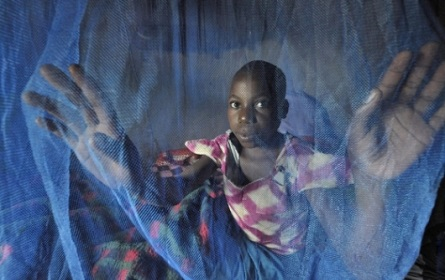
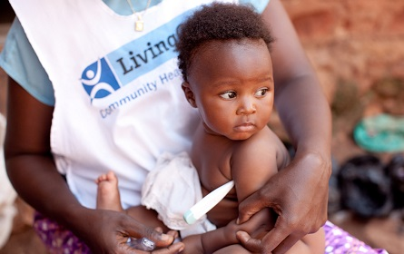

|
|
Diese Organisation organisiert und finanziert in Entwicklungsländern die Verteilung von hochwertigen insektizid-behandelten Bettnetzen zur Vorbeugung gegen Insektenstiche, die einem mit Malaria anstecken können.
Die Organisation verteilt die Netze an andere non-profit Organisationen oder staatliche Behörden, die wiederum die Netze direkt in der Bevölkerung weiter verteilen. |
|
Diese Organisation betreibt in Entwicklungsländern ein Netzwerk von «Community Health Promotern», die Medikamente und wichtige Alltagsgegenstände direkt an Familien verkaufen und gesundheitliche Aufklärung durchführen.
Die Organisation möchte vor allem einfach zu vermeidende Krankheiten bei Kindern verhindern. Damit soll die hohe Kindersterblichkeit reduziert werden. |
|
Zahlreiche wissenschaftliche Studien belegen, dass die Malaria Ansteckungsrate und auch die Kindersterblichkeit (70% der Malaria-Todesfälle sind bei bei Kindern unter 5 Jahren) durch die Verwendung von Bettnetzen stark gesenkt werden.
Die renommierte NGO Evaluationsorganisation «GiveWell» schätzt, dass diese Organisation mit $2'500 bis $7'500 statistisch gesehen ein Menschenleben rettet. Zudem schätzt GiveWell, dass diese Organisation in der Vergangenheit mit durchschnittlich etwa $3'300 ein Menschenleben gerettet hat. Eine Spende an diese Organisation sei hocheffektiv darin, Malaria zu bekämpfen und weltweit eine der kosten-effektivsten Möglichkeiten Leben zu retten. |
| Spendenwirkung / Effektivität |
|
Vorläufige Ergebnisse einer Studie zur Wirkung dieser Organisation zeigt eine starke Reduktion der Kindersterblichkeit. Es gibt jedoch noch keine detaillierten Auswertungen und keine Wiederholungen der Studie.
Die renommierte NGO Evaluationsorganisation «GiveWell» schätzt, dass diese Organisation mit $4'400 bis $37'000 statistisch gesehen ein Menschenleben rettet. Zudem schätzt GiveWell, dass diese Organisation in der Vergangenheit mit durchschnittlich etwa $10'000 ein Menschenleben gerettet hat. Aufgrund der schlechteren Spendenwirksamkeit im Vergleich mit anderen Organisationen und der noch unklaren Evaluation empfiehlt GiveWell diese Organisation nur bedingt. |
| Spendenwirkung / Effektivität |
|
Die Organisation finanziert und verteilt in grossen Mengen Bettnetze an Distributionspartner (andere non-profit Organisationen oder staatliche Behörden), die wiederum die Netze direkt in der Bevölkerung weiter verteilen.
Die Distributionspartner registrieren die Personen, die Netze in den Zielgebieten erhalten, verteilen die Netze, überwachen den gesamten Registrations- und Distributionsprozess und überprüfen schliesslich deren Einsatz und Erfolg mit nachfolgenden Befragungen.
Die Organisation überprüft die Distributionspartner regelmässig und sorgt für die korrekte Umsetzung aller Vorgaben.
Die Organisation unterstützt zudem weitere Aktivitäten nebst der Verteilung von Netzen wie die Erforschung von Resistenzen gegen Insektizide.
Die Organisation arbeitet in den folgenden Ländern: Ghana, Kongo, Malawi, Papua-Neuguinea, Sambia, Togo, Uganda. |
|
Die Organisation betreibt ein Netzwerk sogenannter «Community Health Promotern» (CHP) und bildet diese auch aus.
Die CHP verkaufen wichtige Alltagsgegenstände direkt an Familien. Darunter sind Gegenstände, die der Gesundheitsvorsorge dienen wie Vitamine und Mineralien, oder Gegenstände die der Hygiene und sexuellen Gesundheit dienen wie Seife, Windeln, Tampons oder Verhütungsmittel. Zudem verkaufen die CHP Medikamente zur Behandlung von Lungenentzündung, Durchfall und Malaria. Ausserdem werden andere Gegenstände wie Solarlampen oder Kochherde verkauft.
Die CHP helfen den Familien vor Ort bei der Diagnostizierung, Behandlung und Vorbeugung von Krankheiten. Zudem beraten sie die Familien bei der Ernährung, der Familienplanung, der Hygiene und dem richtigen Einsatz gekaufter Gegenstände.
Die Organisation arbeitet in Uganda und Kenia. |
|